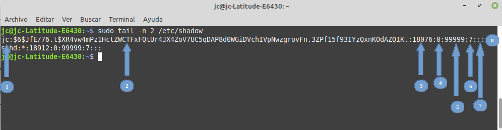
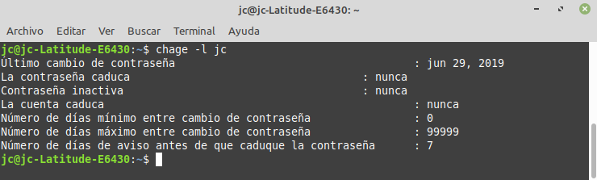
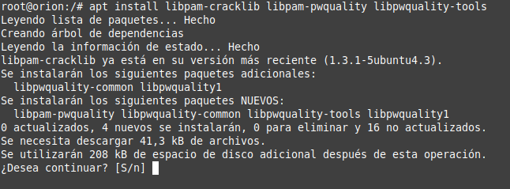
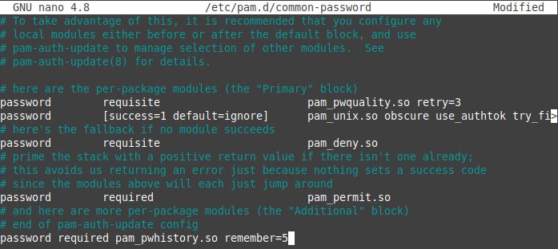
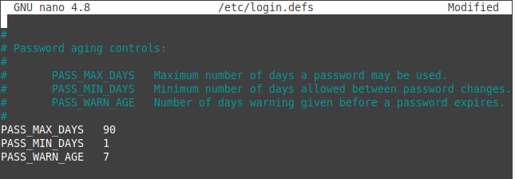
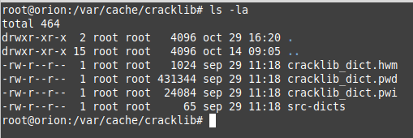
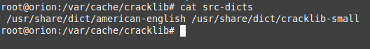
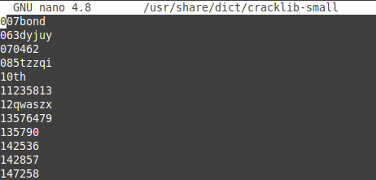
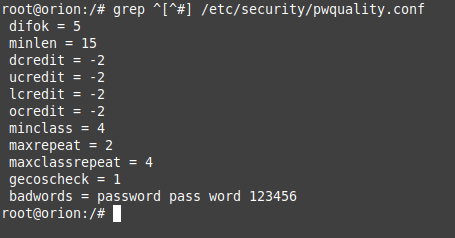
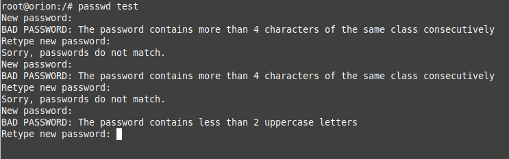

4.2. Gestión de la política de contraseñas en Ubuntu
1. Introducción
En los sistemas Linux, igual que en los sistemas Windows, es necesario implementar un mínimo cumplimiento de seguridad para la fortificación de las contraseñas que tengan en cuenta aspectos como el tiempo de vida de la contraseña, la longitud mínima, su complejidad, que no estén basadas en diccionario, que no se repitan respecto a las anteriores, etc. Según el escenario en el que nos encontramos, estas políticas de contraseñas se establecerán a nivel de dominio o a nivel de equipo.
- Las contraseñas en un sistema Ubuntu se almacenan en el fichero /etc/shadow (ver figura inferior), donde:
- Nombre de usuario.
- Contraseña cifrada. Se establece con la estructura $id$salt$hashed. El tipo de algoritmo utilizado se define en el inicio en números entre los símbolos $.
- $1$ - MD5.
- $2a$ - Blowfish.
- $2y$ - Blowfish.
- $5$ - SHA-256.
- $6$ - SHA-512.
- Último cambio de contraseña desde el 1/Enero/1970 (epoch).
- Cantidad de días restantes para que el usuario cambie su contraseña. -1 significa que nunca expira.
- Número máximo de días que la contraseña es válida después del cambio de contraseña por parte del usuario.
- Días antes de que caduque la contraseña, advierte al usuario para que la cambie.
- Días después de que caduque la contraseña, esa cuenta estará deshabilitada.
- Días desde el 1/Enero/1970. Fecha absoluta que especifica cuando ya no se pueda usar el inicio de sesión para esa cuenta.

- En el fichero /etc/login.defs se establecen, entre otras cosas, las políticas de gestión de contraseñas para nuevos usuarios.
- Los módulos PAM (Pluggable Authentication Modules) pam_cracklib y pam_pwquality (versión mejorada del primero) permiten definir con más detalle directivas de contraseñas para las cuentas de usuarios.
2. Comando chage
Con el comando chage se puede establecer la caducidad de contraseñas y cuentas de usuario. Esto no afecta a los nuevos usuarios, se establece de forma nominal a usuarios existentes.
Para aplicar estas opciones a nuevos usuarios y así generar estas directivas por defecto habría que hacer uso de login.defs.
Opciones del comando chage:
- -d, --lastday: Establece el día del último cambio de la contraseña.
- -E, --expiredate: Establece la fecha de caducidad.
- -I, --inactive: Deshabilita la cuenta después de la inactividad de días de la fecha de caducidad.
- -l, --list: Muestra la información de la edad de la cuenta.
- -m, --mindays: Establece el número mínimo de días antes de cambiar la contraseña.
- -M, --maxdays: Establece el número máximo de días antes de cambiar la contraseña.
- -R, --root: Directorio en el que hacer chroot.
- -W, --warndays: Establece los días de aviso de expiración.
Con el parámetro -l se puede consultar la información sobre las cuentas.

3. Cumplimiento de directivas de seguridad sobre contraseñas seguras de usuarios
- Letras mayúsculas.
- Letras minusculas.
- Dígitos.
- Simbolos.
Para hacer cumplir una política de contraseña segura en Ubuntu, usaremos el módulo pwquality de PAM.
4. login.defs (periodo de caducidad de la contraseña)
- PASS_MAX_DAYS: Número máximo de días que se puede usar una contraseña.
- PASS_MIN_DAYS: Número mínimo de días permitido entre cambios de contraseña
- PASS_WARN_AGE: Número de días de advertencia antes de que caduque una contraseña.
- PASS_MIN_LEN y PASS_MAX_LEN: Número mínimo y máximo de caracteres que debe tener la contraseña.
- PASS_ALWAYS_WARN: Advierte sobre contraseñas débiles.
- PASS_CHANGE_TRIES: Número máximo de intentos de cambiar la contraseña si se rechaza por que es demasiado "fácil".
- ENCRYPT_METHOD: Tipo de cifrado que tendrá la contraseña (SHA256 $5$ o SHA512 $6$).
- LOGIN_RETRIES: Número máximo de reintentos de inicio de sesión en el caso de que la contraseña sea incorrecta.
- LOGIN_TIMEOUT: Tiempo máximo en segundos para iniciar sesión
5. pam_cracklib y pam_pwquality
- Es una versión más actual y mejorada de cracklib, por lo que es esta la librería que utilizaremos.
- Llama a una rutina cracklib para verificar si la contraseña es parte de un diccionario si este se especifica en la directiva dictpath.
root@orion:/# apt install libpam-cracklib libpam-pwquality libpwquality-tools

- difok: Número de caracteres en su nueva contraseña que NO debe estar presente en su contraseña anterior. (El valor predeterminado es 5).
- minlen: Longitud mínima de la contraseña. (El valor predeterminado es 9).
- dcredit: Número máximo de créditos por usar dígitos (si parámetro> 0), o el número mínimo requerido de dígitos (si parámetro <0). El valor predeterminado es 1.
- ucredit: Número máximo de créditos por usar caracteres en mayúscula (si parámetro> 0), o el número mínimo requerido de caracteres en mayúscula (si parámetro <0). El valor predeterminado es 1.
- lcredit: Número máximo de créditos por usar caracteres en minúscula (si parámetro> 0), o el número mínimo requerido de caracteres en minúscula (si parámetro <0). El valor predeterminado es 1.
- ocredit: Número máximo de créditos por usar otros símbolos (si el parámetro> 0), o el número mínimo requerido de otros símbolos (si el parámetro <0). El valor predeterminado es 1.
- minclass: Número mínimo de clases de caracteres requeridas para la nueva contraseña. El valor predeterminado es 0. Como ejemplo, si se pone 4, se obliga el uso de números, letras mayúsculas, minúsculas y símbolos.
- maxrepeat: Cantidad máxima de veces que se repite un carácter en una contraseña. El valor predeterminado es 0.
- maxclassrepeat: Número máximo de caracteres consecutivos en una sola clase. El valor predeterminado es 0.
- gecoscheck: Verifica si las palabras individuales de más de 3 caracteres del campo passwd GECOS (campo de comentarios) del usuario están contenidas en la nueva contraseña. Predeterminado 0 (desactivado).
- dictpath: Ruta a los diccionarios de clacklib.
- badwords: Lista de palabras separadas por espacios que no deben incluirse en la contraseña (nombre de la empresa, palabra "contraseña", etcétera).
Para establecer políticas para evitar la reutilización de contraseñas y establecer el cifrado de las mismas, hay que editar el archivo /etc/pam.d/common-password.
Como ejemplo, si se quiere que recuerde 5 contraseñas, el texto a añadir al final del fichero sería el siguiente:
password required pam_pwhistory.so remember=5

A su vez, tendremos definida la función SHA-512 como función criptográfica para el hash de la contraseña. Ahora estableceremos la caducidad e intervalo de las contraseñas para su cambio en los usuarios. Para ello, editaremos el archivo /etc/login.defs
En este archivo hay que moverse hasta la sección de contraseñas y establecer los parámetros PASS_MAX_DAYS a 90 días y PASS_MAX_DAYS a 1 (suponiendo que se desean estos intervalos). De esta manera obligamos a utilizar una contraseña un mínimo de un día y un máximo de 90, evitando que cambien las contraseñas varias veces en un solo momento para saltarse el histórico de contraseñas. Quedando de la siguiente forma.

5.1 Sistema de créditos, valores negativos y clases en pwquality
Créditos
Valores negativos
Clases (minclass)
- La contraseña debe tener una longitud mínima de 15 caracteres.
- En la contraseña, el mismo carácter no debe repetirse más de dos veces.
- En una contraseña, las clases de caracteres se pueden repetir hasta cuatro veces.
- La contraseña debe contener caracteres de cada clase.
- La nueva contraseña debe tener 5 caracteres nuevos en comparación con la anterior.
- Habilitar la validación de GECOS.
- Prohibir las cadenas "password" "pass" "word" "123456".
Una vez se tienen las reglas de complejidad, hay que editar el archivo /etc/security/pwquality.conf para fortalecer los requisitos de complejidad de la contraseña. A continuación se muestra un archivo de comentarios de ejemplo para una mejor comprensión.
# Make sure 5 characters in new password are new compared to old password
difok = 5
# Set the minimum length acceptable for new passwords (Longitud mínima de la contraseña, para este caso 15)
minlen = 15
# Require at least 2 digits (Número mínimo de dígitos, para este caso 2)
dcredit = -2
# Require at least 2 upper case letters (Número mínimo de letras mayúsculas, para este caso 2)
ucredit = -2
# Require at least 2 lower case letters (Número mínimo de letras minúsculas, para este caso 2)
lcredit = -2
# Require at least 2 special characters (non-alphanumeric) (Número mínimo de símbolos No alfanuméricos, para este caso 2)
ocredit = -2
# Require a character from every class (upper, lower, digit, other) (Requiere caracteres en al menos 4 clases diferentes)
minclass = 4
# Only allow each character to be repeated twice, avoid things like LLL (Permite en este caso que cada carácter se repita dos veces, evitar LLL, por ejemplo)
maxrepeat = 2
# Only allow a class to be repeated 4 times
maxclassrepeat = 4
# Check user information (Real name, etc) to ensure it is not used in password
gecoscheck = 1
# Leave default dictionary path (indicar el path del diccionario)
dictpath = /path/to/dict (Ruta a los diccionarios de cracklib. Si se pone en blanco, se usa por defecto el de cracklib).
# Forbid the following words in passwords (palabras no permitidas en el password)
badwords = password pass word 123456 (Lista separada por espacios de palabras que están prohibidas en las contraseña (nombre de la empresa u organización, la palabra «password», etcétera)
Diccionarios
En los sistemas basados en Debian, normalmente los diccionarios de cracklib están en la ruta /var/cache/cracklib.

En este directorio existe un fichero "src-dicts" con la ruta donde se encuentran los diccionarios disponibles.

Como se puede observar en la imagen superior, se tiene dos diccionarios con palabras inglesas donde uno de ellos es reducido (small). Si accedemos a uno de ellos para ver su estructura, simplemente hay una palabra por línea, por lo que si se quiere crear uno personalizado, simplemente habrá que ir añadiendo una cadena de texto por línea.

Por otro lado, si se muestra el fichero pwquality.conf sin comentarios, podemos observar cómo queda.
root@orion:/# grep ^[^#] /etc/security/pwquality.conf

Como se puede observar, algunos parámetros que se han configurado en el archivo son redundantes. Por ejemplo:
- El parámetro minclass es redundante dado que ya usamos al menos dos caracteres de la clase usando los campos de [u,l,d,o]credit.
- La lista de palabras que no se pueden usar también es redundante, ya que hemos prohibido la repetición de cualquier clase 4 veces (todas las palabras en nuestra lista están escritas en minúsculas).
Por último, los campos [u,l,d,o]credit contienen un número negativo. Esto se debe a que los números mayores o iguales a 0 darán crédito por usar el carácter en su contraseña. Si el campo contiene un número negativo, significa que se requiere una cierta cantidad.
Como ejemplo, se ha creado un usuario test y a continuación, se le intenta cambiar la contraseña. En el primer caso se introduce 123456 y nos devuelve un error que informa que se ha establecido más de 4 caraecteres seguidos de la misma clase. En el segundo intento, se introduce C1amina-100 y nos devuleve un error informando que se tienen menos de 2 letras en mayúsculas. Como se puede observar, el sistema está negando la posibilidad de establecer una contraseña que no cumpla con la política que se ha configurado anteriormente.

Más información sobre el uso de directivas del fichero de pwquality en el siguiente enlace:
5.2 Probando las contraseñas (pwscore)
Junto con la herramienta ‘libpwquality‘ (libpwquality-tools), se tiene también disponible otra llamada ‘pwscore‘, que proporciona un método para verificar la complejidad de una contraseña en base a los criterios establecidos en pwquality.
La herramienta ‘pwscore‘ lee desde la salida estándar stdin. Para utilizarla simplemente hay que añadir a continuación una contraseña que se quiera probar, esta mostrará un error o un valor de puntuación del 0 al 100.
La puntuación de calidad de la contraseña es relativa a la configuración que se tenga definida. Todos los valores por debajo de 50 se consideran de calidad moderada y por encima de calidad fuerte o muy fuerte. Cualquier contraseña que pase los controles de calidad, debería soportar sin problemas los ataques de diccionario o de fuerza bruta.
A continuación se realiza una prueba, utilizando una contraseña simple:
Obra publicada con Licencia Creative Commons Reconocimiento No comercial Compartir igual 4.0